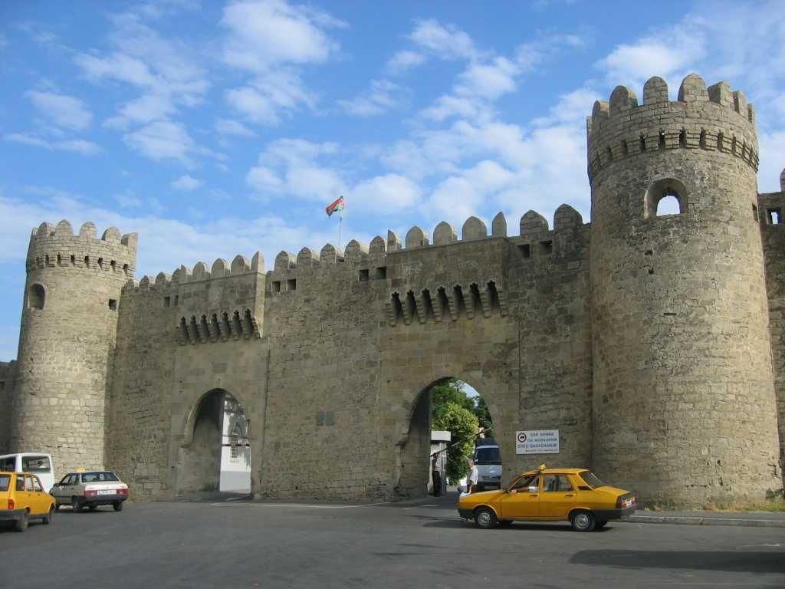
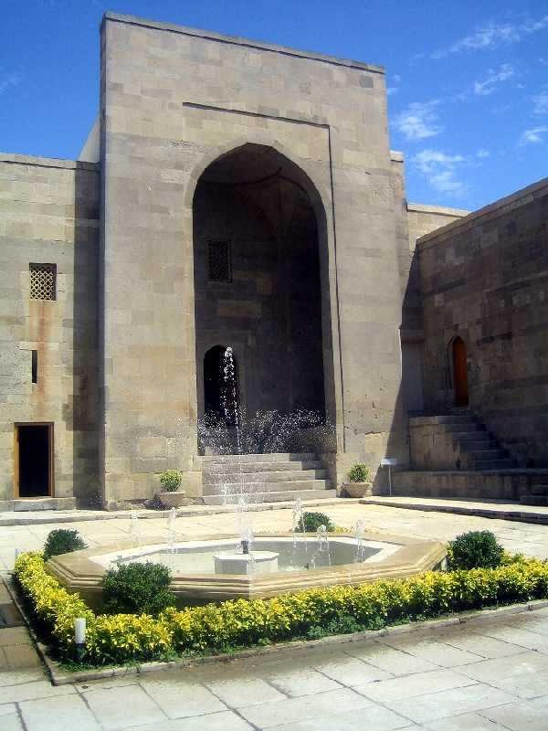
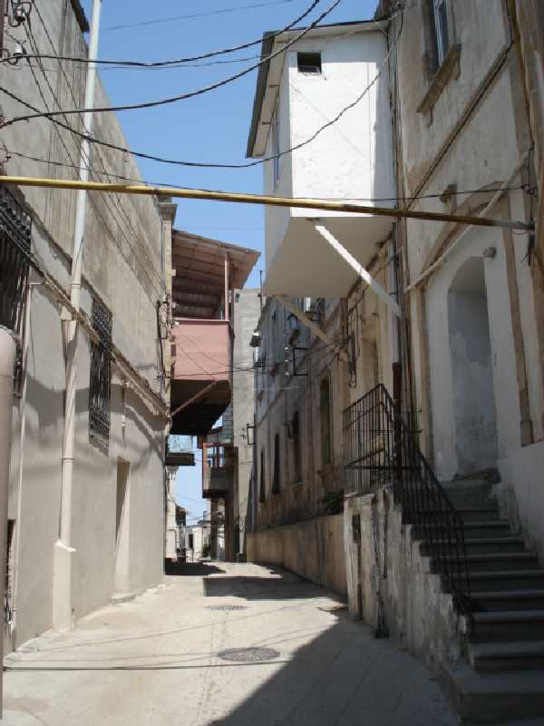

Main Entrance Walled City Baku
バクーは５世紀ごろ都市が形成され８世紀には豊富な石油が知られるようになった １２世紀にシルバンシャー朝の首都となり急速に栄え１４世紀からイランの侵略にあい１８世紀にはロシアの攻撃を受け２０世紀初頭の帝政ロシア末期は世界の石油生産の半分以上を占めるほどであった 旧市街には城壁に囲まれていたが現在の城壁は１９世紀にロシア軍が補強したものである

Shirvanshah Palace & Old Towne
シルヴァンシャー朝の君主が住んでいた宮殿がある旧市街は迷路のような小道と古い建物が残っている